01
Database 101: Data Storage, SQL and Query Optimization
Registration & Confirmation
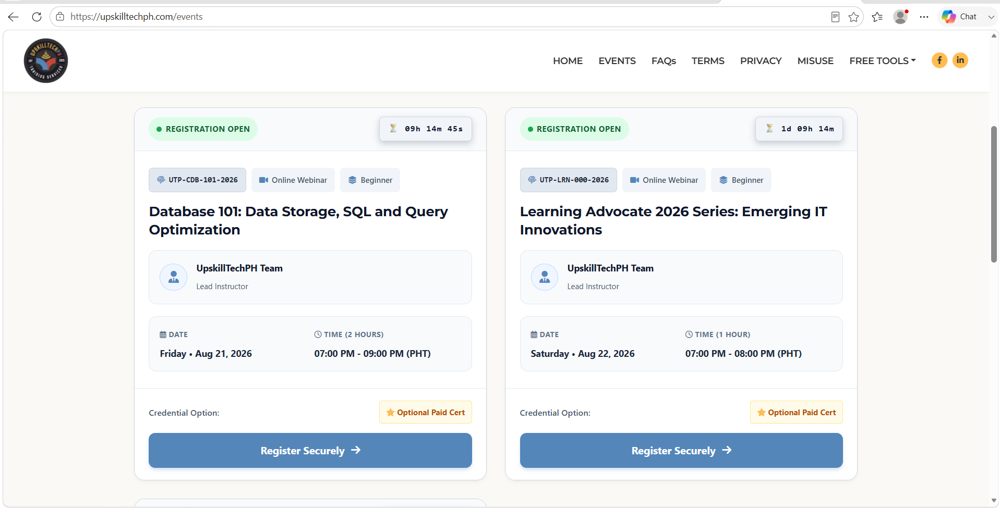
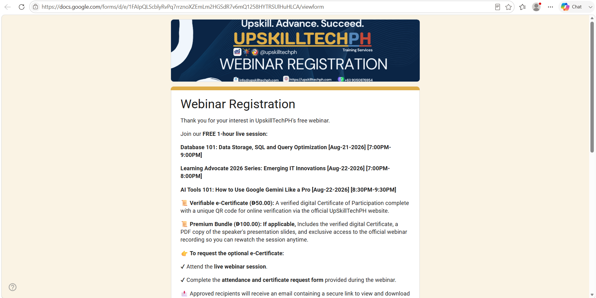
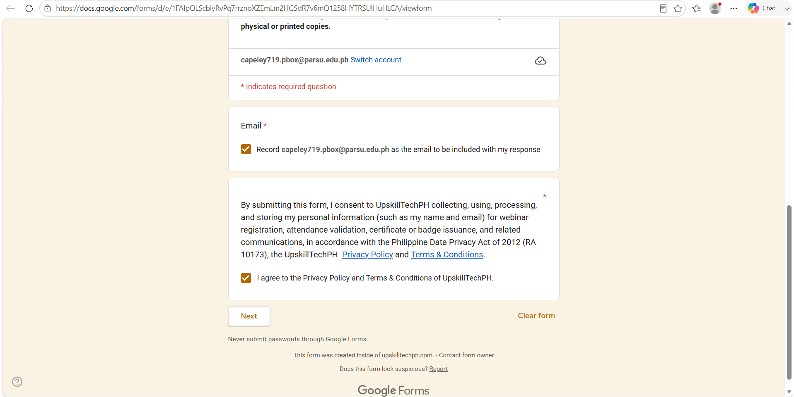
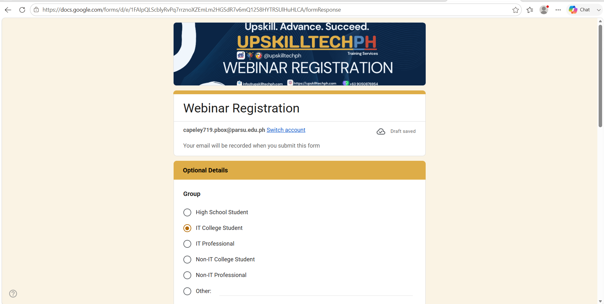
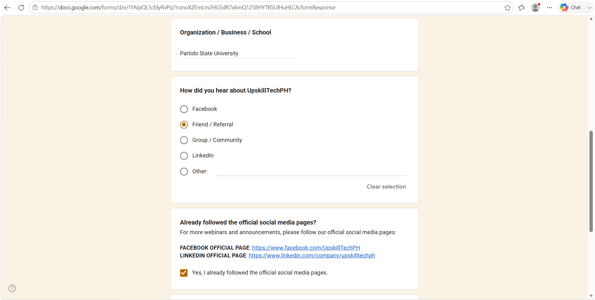
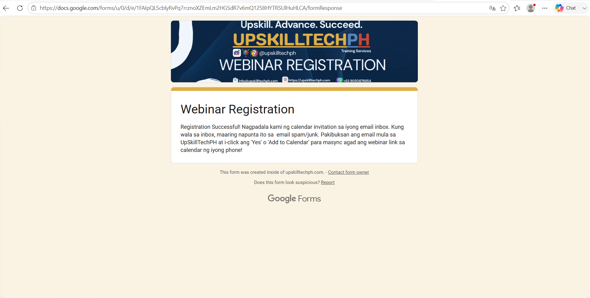
Webinar Session
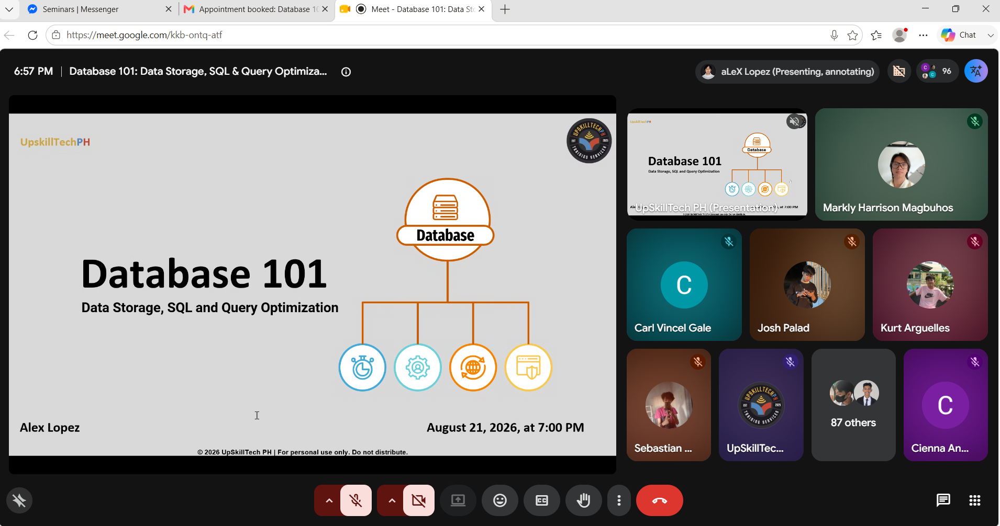
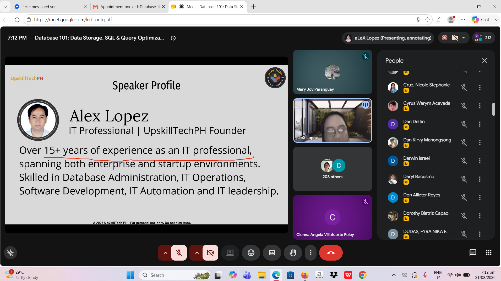
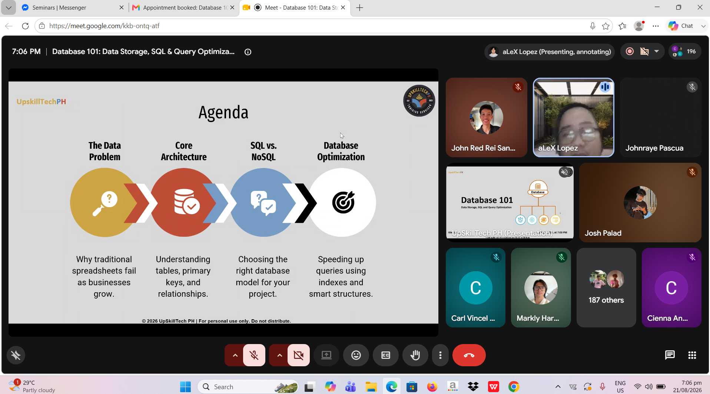
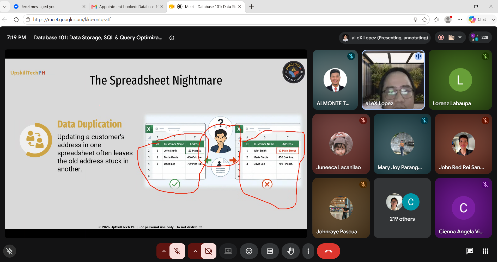
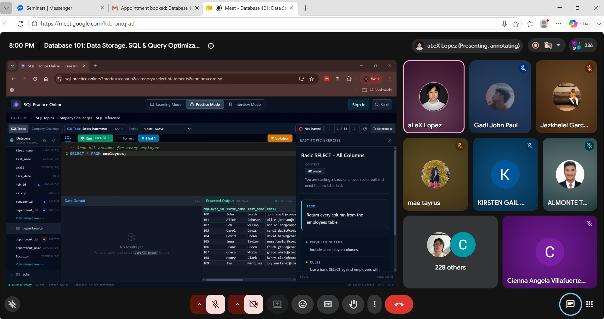
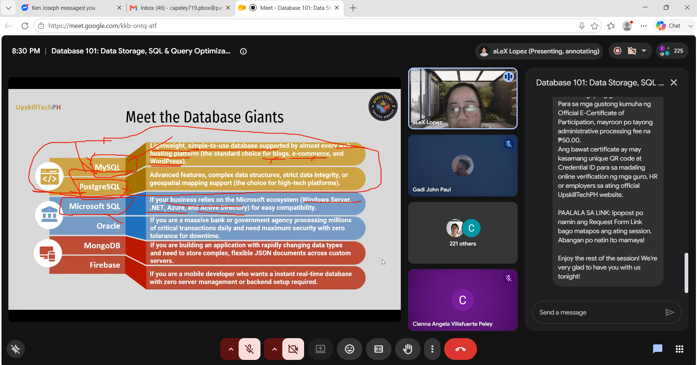
My Reflection
This webinar helped me understand that database work is more than simply storing information. I learned how data storage, SQL, and query optimization work together, and the discussion about the “spreadsheet nightmare” made the importance of organized databases easier to understand. The examples and speaker discussion also helped me see how database skills can be applied to real information systems.
Certificate: View Webinar Certificates